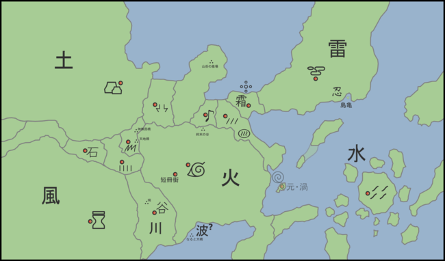

Мир Наруто
Мир Наруто существует в пределах вымышленной голубой планеты под названием Земля, которая в свою очередь включает в себя континент, разделённый на большое количество различных государств.
Страны
Страны функционируют как отдельные, независимые друг от друга политические организации и вероятно являются монархиями, управляемыми даймё, титул которых равен по значению главам Cкрытых Деревень. Мир Наруто подобен феодальной Японии во многих отношениях; эти страны поддерживают равновесие между собой с помощью силы. Периодически подписываются договоры, но они, как правило, стоят не больше, чем бумага, на которой они записаны.
